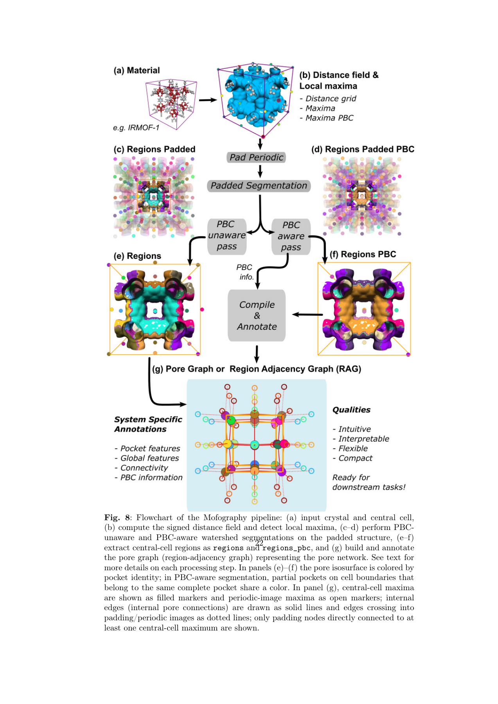
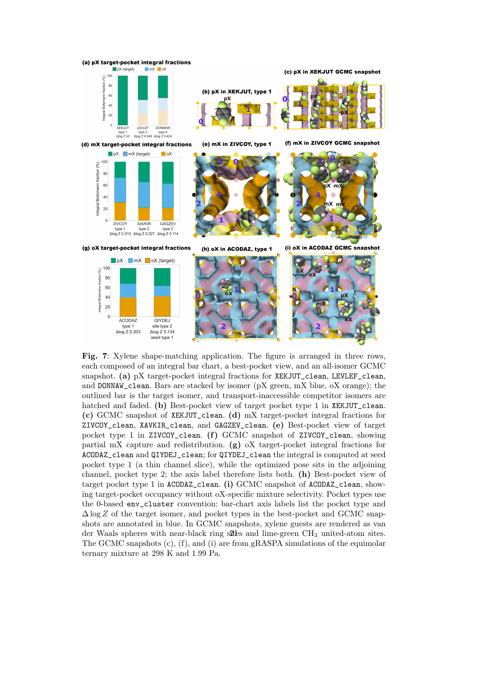

孔腔：房间
局部的空隙区域。大小相近的孔腔，也可能有不同形状和孔壁化学环境。
MOFOGRAPHY · 孔隙的地图
把空隙分成孔腔，用孔窗连接成图：Mofography 将局部环境与整张网络放在同一套可查询的表示中。
ChemRxiv v1 · 2026-11-06 · 未经同行评审；本页依据正文核对。
阅读原论文 ↗金属有机框架（MOF）由金属节点和有机连接体搭成，原子之间留下可容纳分子的空间。吸附是分子在这些空间中停留；分离还要求不同分子的停留倾向或通行能力不同。
局部的空隙区域。大小相近的孔腔，也可能有不同形状和孔壁化学环境。
相邻孔腔之间的狭窄连接。大房间并不能保证门够宽。
通道需要在重复晶胞中延伸。一个封闭环或孤立大孔，不等于贯通网络。
最大孔腔直径 LCD 回答“最大的球能放在哪里”；孔限直径 PLD 回答“多大的球仍有贯通路径”。它们很有用，但没有逐个告诉你哪些孔在相连、瓶颈在哪里。本文保留这些全局指标，同时让它们能追溯到具体孔腔和孔窗。
依据：正文 §1、§2.2、§2.5。房间与门是教学类比。
晶胞只是重复结构的一块切片，边缘上的半个孔不是真的半间房。两遍分割使用同一套周期扩展网格：一遍保留不同空间片段，供连接分析；另一遍把同一孔的周期片段归为一类，供体积等属性累加。二者并行提供信息，不是先丢掉周期信息再补回来。

默认网格间距 0.5 Å，h = 0.2 Å，骨架表面遮罩厚度 0.05 Å，局部峰最低半径 1.5 Å。1 Å = 10⁻¹⁰ m。增大 h 倾向于合并邻近的小区域；太粗的网格可能漏掉真实极大值。阈值控制表示，不能直接视为材料中孔的唯一“真值”。
依据：正文 §2.1、§3.1，图 8；原图 © Gopalan 等，CC BY 4.0。
下面是虚构的一维周期孔图，不是任何真实 MOF。A、B 孔腔直径均为 12 Å；晶胞内门宽 6 Å，通向下一晶胞的门宽可以调节。球形探针直径固定为 4 Å，且本演示规定门宽至少等于探针直径才可通行。
虚线框为一个晶胞；A′ 是下一晶胞中 A 的周期像。青绿实线可通行，橙色虚线被阻断；节点大小与画面坐标仅作示意。
这里 LCD 始终为 12 Å，但跨晶胞孔窗关闭后，A–B 这一对孔仍相连，却不能无限延伸。这就是“局部连通”与“贯通”的区别。真实算法还需处理三维周期位移和复杂孔窗，不能把这个滑块当作扩散速率模拟。
教学规则据正文 §2.5 与 §3.5 的贯通概念设计；数值、网络与状态均为虚构。
作者从 CoRE MOF 2019 的 2,000 个结构子集中得到 1,999 个有效分割结果。另一个结构的最大距离峰约 1.2 Å，低于默认 1.5 Å 门槛；“没分割出来”不等于“没有空隙”。
LCD、PLD、LIS 对 Zeo++ 的平均绝对误差；R² ≥ 0.99。
可达表面积的平均绝对相对偏差；总体表面积为 2.3%。
可达孔体积的平均绝对相对偏差；即使 R² = 1.00，仍存在相对误差。
平均绝对误差是逐结构差值取绝对值后的平均；相对偏差则还除以参考量，因此小孔体积的相对误差容易变大。R² 衡量整体对应关系，不代表每个材料都准确。
比较使用相同的骨架原子半径约定。主基准网格间距 0.5 Å、探针半径 1.2 Å；孔径分布与 PoreBlazer 的比较另用 0.1 Å 网格。有限网格会略低估孔窗直径，恰在可通行阈值附近时，小误差就可能改变“是否可达”。
论文报告值：§2.2、图 2。此处为节选，不重绘散点、不视作实验验证。
邻、间、对二甲苯（oX、mX、pX）有相同分子式，但苯环上两个甲基的位置不同。筛选要同时回答两件事：它愿不愿意待在这个孔里，以及它能不能沿孔网到达这里。材料代号如 ACODAZ 是结构数据库编号，不是化学式。
在每类代表性孔腔中尝试许多分子位置和方向。低能姿态权重大；能容纳的有利姿态越多，总权重也可能越大。再用分子的动力学直径做球形可达性过滤。
GCMC（巨正则蒙特卡洛）随机尝试分子插入、删除、移动等操作，按统计概率接受或拒绝，最后求平衡占据的平均值。这里用三种分子等摩尔进料、298 K、1.0 与 1.99 Pa，加入客体间作用和静电。它不追踪真实扩散时间。
i 是异构体，p 是孔腔，q 是一个位置加方向，K 为通过几何与能量筛选的姿态集合；E 是骨架–客体范德华能，kB 是玻尔兹曼常数，T 为温度。能量与 kBT 用一致单位，指数无量纲。较大的 Δ log Z 表示对最强竞争者的局部优势，并不直接给出混合物选择性。筛选阶段不含静电；验证阶段包含，二者并非完全相同模型。
正文 §3.7，式 5、7；可达性过滤见式 8，方法注明 KD/2 加 0.1 Å 裕量。

局部偏好 pX，且竞争者被可达性筛选排除；选定案例的 GCMC 也显示 pX 选择性。这是局部到材料较一致的情形。
mX 目标孔只捕获部分 mX，其余分散到邻近环境。邻孔与分子间接触改变了全材料的占据分布。
筛选偏好 oX，但目标孔内模拟平均组成为约 21% oX、21% mX、58% pX。占据目标孔不等于对目标分子有选择性。
依据：§2.6、§3.7、图 7；ACODAZ 百分比来自正文，不由快照中分子个数估计。原图 © Gopalan 等，CC BY 4.0。
本文的贡献是可解释的孔隙表示：能从全局指标回到孔腔、孔窗和路径，定位筛选为何成功或失败。它没有证明单孔分数足以预测真实工艺分离。
不能。先检查孔窗、周期贯通与分子尺寸，再检查孔壁作用及混合物竞争。即使几何上可达，也还不能据此判断吸附量或选择性。
没有。它限制的是“单孔偏好直接代表材料选择性”的推断。孔图反而提供了定位不同孔环境和相邻关系的工具，使偏差可以被解释。